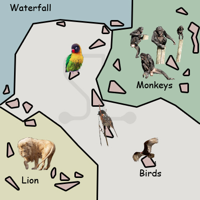

This week’s course focused on the principles and practical applications of spatial audio, delving into how we perceive three-dimensional sound spaces and guiding us to understand how sound replicates “positional awareness”, “distance perception”, and “directionality” in virtual environments. Through the instructor’s real-world project demonstrations, I gained a more systematic understanding of how sound influences immersive experiences, emotional guidance, and interactive narratives.
The instructor first introduced the physiological basis of spatial audio: our ability to “locate where a sound comes from” relies on subtle time differences (ITD) and intensity differences (ILD) between the two ears. For example, a sound from the right reaches the right ear first, then the left, and the brain uses this tiny difference to judge the sound source’s position.
Additionally, the structure of our earlobes “sculpts” sound by filtering it before it enters the ear canal, which is known as the Head-Related Transfer Function (HRTF). Different HRTF curves cause slight variations in how each person perceives the spatial position of the same sound source. The charm of spatial audio lies in the fact that we don’t just “hear sounds” we “hear positions”.
By wearing specialized headphones and head-tracking devices, the instructor demonstrated how to create a virtual sound field, making listeners feel as if they were in a “sound zoo” or “cosmic galaxy”. By adjusting the position, height, and movement speed of sound sources, we can help listeners form a clear spatial map.
What impressed me most is that sound isn’t just a “point”, but a “field” with motion trajectories and reflection information. For example, when hearing a trumpet played from the front, sound begins to reflect after 50–80 milliseconds. These subtle early reflections and reverberation characteristics help us judge the environment’s size, material, and the sound’s direction.
In the final hands-on session of the class, the instructor taught us to use a zoo map (as shown in the figure below) as the background for a virtual scene, adding spatial sound effects to different areas in Ableton Live 12:

He taught us to design the following sound logic:
- Overall background sound: Set as continuous bird chirping to create a natural environment atmosphere.
- Regional sound effects triggering:
- When approaching the lion area, a deep and shocking roar is heard in the ears.
- Near the waterfall area, the sound of rushing water is audible.
- Close to the monkey area, active monkey calls and the sound of swinging branches are heard.
- Spatial positioning and distance control:
- When the character stands between the lion and waterfall areas, a binaural separation effect is achieved, for example, the left ear hears the lion, and the right ear hears the waterfall.
- By adjusting the spatial placement of audio clips in Ableton, a gradual effect of “louder when approaching, softer when moving away” is created to simulate real-world distance perception.
This “sound map” not only gives sound spatial logic but also turns hearing into an exploration tool, allowing listeners to judge their location through sound.
Through this lesson, I deeply realized the huge potential of spatial audio in virtual reality, interactive art, and even assistive technologies (such as visual impairment guidance systems). It not only makes sounds more realistic but also gives experiences a sense of orientation and participation.
I began to rethink the role of sound in design: Can the direction and distance of sound guide user actions? Can spatial sound effects evoke memories and build emotional atmospheres? In AR/VR projects, can sound become a navigation element rather than an accessory? These questions highlight how spatial audio transcends traditional functional roles, evolving into a core medium for shaping immersive experiences and emotional connections.